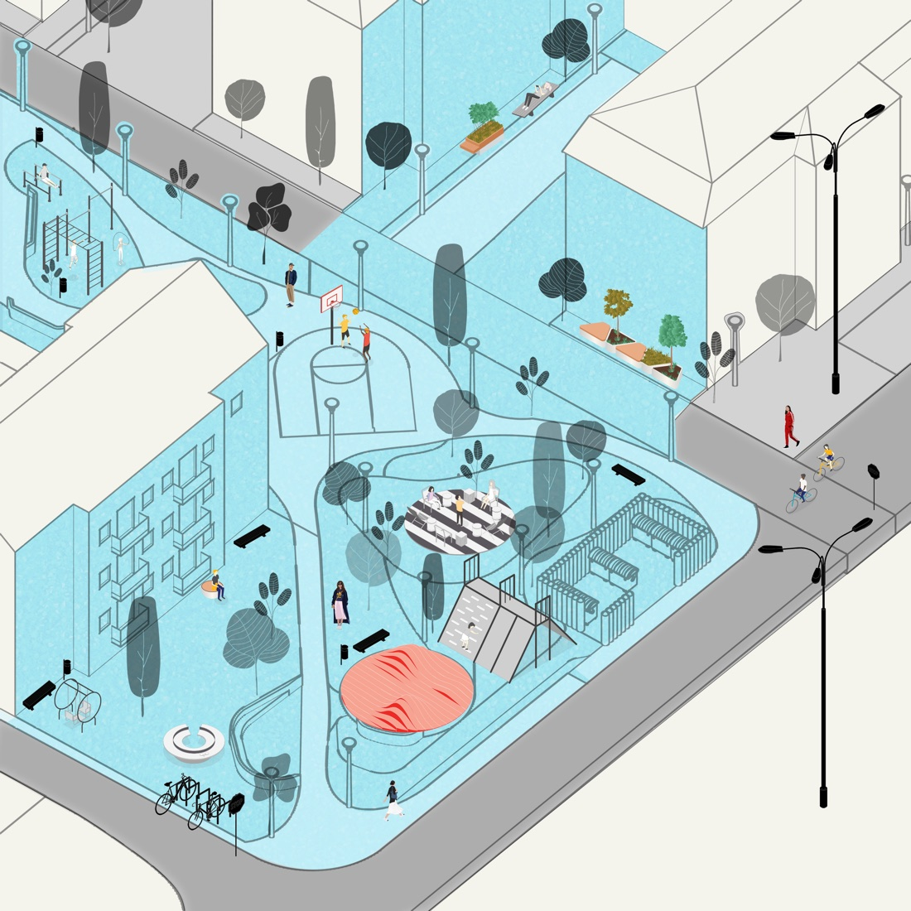

Block 1 — Reimagining a Socialist-Era Superblock in Prishtina
Block 1, a 123-apartment socialist-era residential superblock in Prishtina, needed its public spaces redesigned — but the buildings themselves, and the gardens residents had tended for decades, were to stay untouched. The challenge was doing that redesign with residents, not around them.
Commissioned by UNDP, scoped narrowly to the block’s public and semi-public spaces — yards, parking, walkways, playgrounds — rather than the housing stock itself, and structured around four stages: Analysis, Co-design, Reflection, and Implementation.
A baseline diagnostic combined community surveys with parking and demographic data; the design phase then used SPIN Unit’s own UrbanistAI generative tool to produce photorealistic, site-specific before-and-after visualisations directly on real photographs of the block — letting residents choose between multiple AI-generated options for each intervention (a new playground, a pedestrian safety island, a community courtyard) rather than reviewing a single fixed proposal.
Delivered as a 27-page report covering the diagnostic, a nine-intervention masterplan, and a full set of isometric and street-level visualisations, alongside a reusable catalogue of modular urban furniture for implementation.
{kind=link}

Open full size ↗